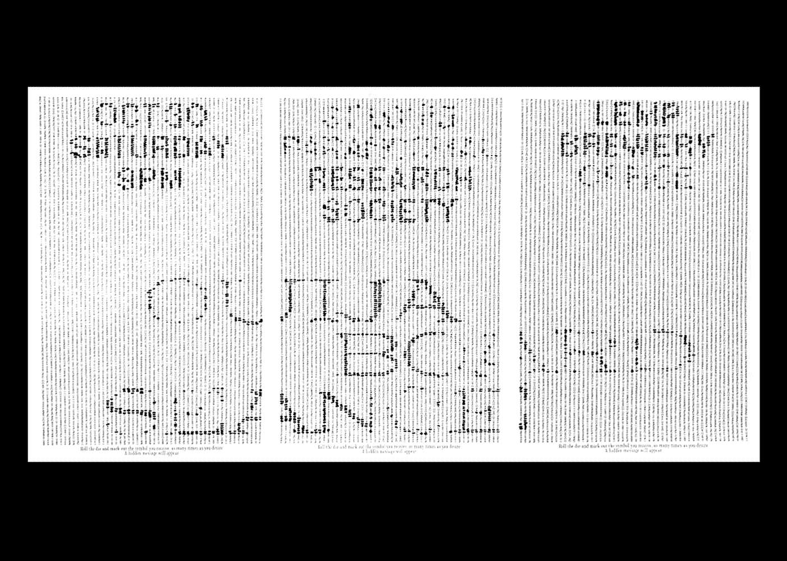
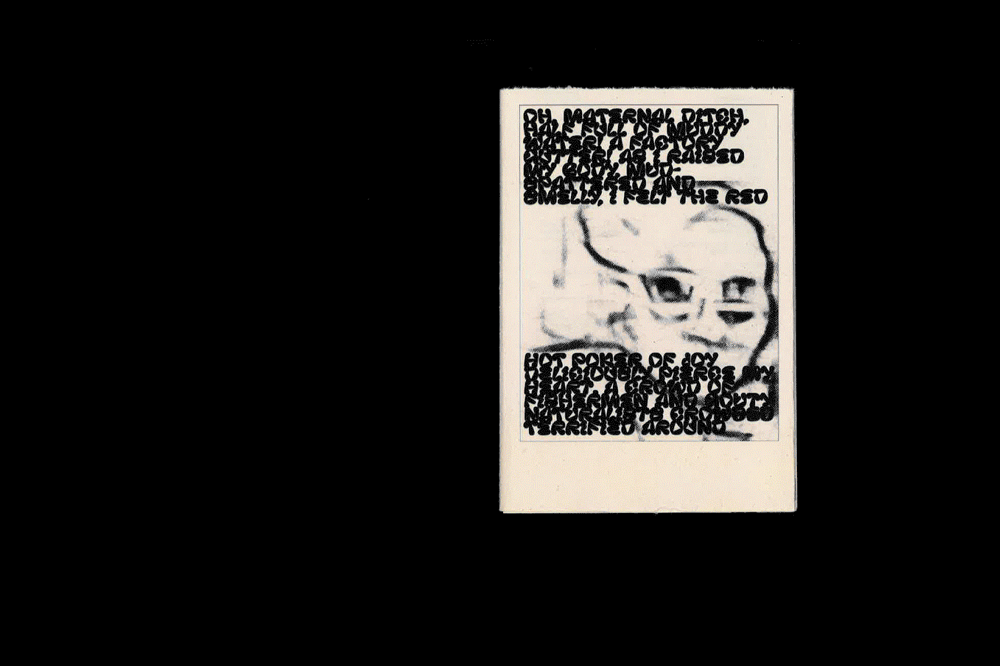

Fresh Not Frozen
A small mobile site that delivers bite-size factoids about the American TV dinner, perfectly portioned for distracted reading.
Leslie Liu is a designer/researcher based in Pittsburgh, USA.
Read.cv, LinkedIn
Images on this website have been dithered to avoid lagginess. For higher resolution photos, please write email.
Are.na AnnualA collection of essays, interviews, and artwork from the Are.na community. Designed with Meg Miller and Daniel Pianetti. 
|
A small mobile site that delivers bite-size factoids about the American TV dinner, perfectly portioned for distracted reading.
An art book containing various writings about and imagery of the iPhone to explore the device’s role in contemporary American society as status symbol, erotic object, spectacle of lightness, and luxury destroyed.

A crowdsourced poster that plays with the gesture of obscuring and revealing information. A collaboration with Betsy Ellison.
Assets for a speculative festival, Basic Space, that explores the potential of abstracting meme formats.
An interactive modular alphabet that explores chance relationships between part and whole.
A broadsheet housing two articles about the role of nostalgia in global and American politics. Influenced by the comfort of vintage food graphics, this newspaper considers how complacency can be dangerous.
Abstracting meme formats via a custom-made Drawbot program. A collaboration with Nathan Springman.
An adaptation of an essay about computer glitches and malware.
A digital zen garden: collecting worldwide memories submitted anonymously on the little memory app; exploring ASCII art and the metaphor of memories as blossoming flowers.
A program exploring the poetics of screenshots; watch digital sunsets with your computer.